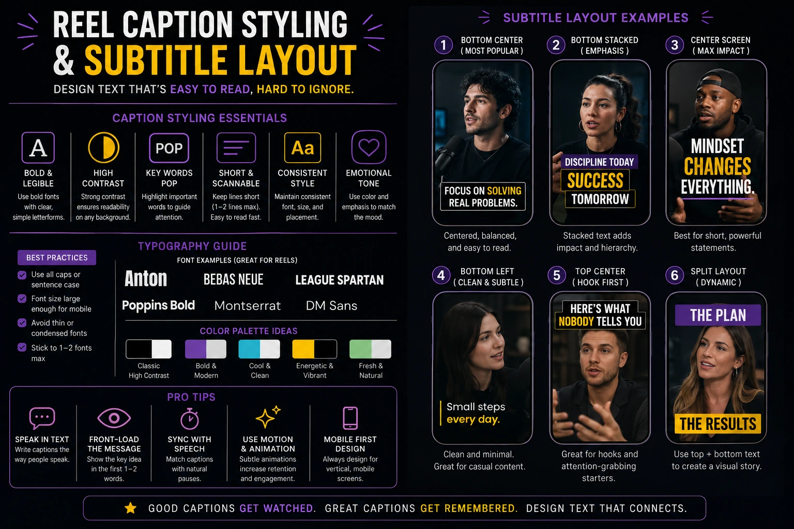
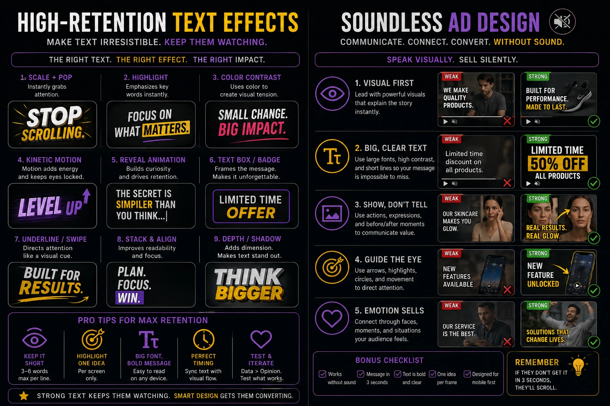

How Kinetic Typography and Dynamic Subtitles Control the Psychology of Muted Video Views
Most Videos Are Watched in Silence
The assumption that built the first generation of digital video advertising — that the viewer would hear the ad — has not been accurate for years. Across Instagram, LinkedIn, Facebook, and YouTube, the majority of video content encountered in a social feed is processed in a muted environment: a phone on a desk in a meeting, a screen in a public space, a scroll through a feed in a room where audio would be intrusive. The viewer's thumb decides whether the content is worth the social cost of unmuting. Most content never earns that decision.
The production discipline that determines whether a video communicates its full message, maintains attention, and converts a silent scroll into a completed view is not the script, the cinematography, or the music — it is the muted video optimisation layer: the system of dynamic kinetic typography, on-screen text animation, and short-form video subtitle layout that carries the entire communicative weight of the audio layer when the audio layer is absent.
This is not a captioning problem. Captions are a transcription of audio content. Dynamic kinetic typography is a visual communication system that uses the motion, weight, scale, colour, and timing of text to replicate — and in some cases exceed — the emotional and persuasive function of the voice that is not being heard. Understanding the psychology of how text motion controls attention, signals emphasis, and manages corporate media pacing in a soundless environment is the production competence that separates video content that retains its audience from video content that loses them to the next post in twelve seconds.
The Psychology of Text Motion in a Soundless Viewing Environment
To understand why dynamic kinetic typography controls retention in muted video, it is necessary to understand what the human attention system is doing when it processes a soundless video in a social feed — and what it needs from the visual layer to remain engaged rather than disengage.
The attention system operates on a fundamental principle of novelty detection: it allocates sustained focus to stimuli that continue to deliver new information, and it withdraws focus from stimuli that become predictable or static. In an audio-led video watched with sound, novelty is delivered continuously through the audio channel — changes in vocal tone, new words, musical development, sound effects — even when the visual content is relatively static. In a muted video, the audio novelty signal is absent, and the visual layer must deliver the full novelty load that the attention system requires to stay engaged.
On-screen text animation delivers visual novelty at the exact frequency the attention system requires: a new word or phrase appearing, a key term scaling up for emphasis, a sentence clearing and a new one arriving — each event is a micro-novelty signal that tells the attention system "new information is arriving, stay focused." The psychological effect is not decorative — it is functional. The specific ways in which text motion controls attention in muted video environments:
- Entrance animation as an attention anchor. When a new text element enters the frame — whether by fading in, sliding up, scaling from a point, or snapping into position — the motion event itself triggers an involuntary attentional response. The viewer's focus is drawn to the new arrival before they have read a word of it. This is the same mechanism that makes a hand gesture during a conversation effective: the movement creates a focal point that the attention system cannot voluntarily ignore. Creative advertising text motion that times entrance animations to the most important words in each phrase uses this mechanism to ensure that the emphasis words receive maximum attentional focus — not because the viewer chose to focus on them, but because the motion made the choice unavoidable.
- Scale variation as a substitute for vocal stress. In spoken language, emphasis is communicated through volume, pitch, and duration — a stressed syllable is louder, higher, and held longer than the surrounding syllables. In a muted environment, none of these signals are available. Scale variation in dynamic kinetic typography performs the same function visually: a word rendered at 1.4 times the size of the surrounding words registers as emphatic in the same way that a raised voice registers as emphatic in audio. The viewer does not consciously analyse the size differential — they experience it as emphasis, automatically and immediately.
- Colour as an emotional signal layer. In audio content, emotion is communicated through the paralinguistic qualities of speech — warmth, urgency, humour, gravity — that exist independently of the words being spoken. In a muted video, colour is the closest available equivalent. A word rendered in the brand's primary accent colour, against the neutral text colour of the surrounding phrase, signals importance. A text sequence that shifts from neutral white to warm amber as the content moves from factual to emotionally resonant signals the register change that a tone of voice shift would signal in audio. High-retention video text effects that use colour with this level of intentionality — not decoratively, but communicatively — produce a text layer that has emotional range rather than typographic uniformity.
- Exit timing as a pacing control mechanism. How long a text element remains on screen after the viewer has finished reading it is not a neutral technical decision — it is a direct control on the viewer's experience of the content's pace. Text that lingers creates the subjective experience of a slow, static video — the visual equivalent of a speaker pausing too long between sentences. Text that clears too quickly creates the experience of being rushed, of information arriving faster than it can be absorbed. The exit timing of each text element is the most precise lever available to the motion designer for controlling corporate media pacing — the felt rhythm of the video that determines whether the viewer experiences it as energetic or sluggish, confident or hurried.
Instagram Reel Caption Styling: The Technical and Creative Standards
Instagram Reel caption styling operates within a specific set of technical constraints — the 9:16 vertical frame, the platform UI elements that occupy the lower third and right edge of the screen, the mobile viewing context in which text must be legible at arm's length — and a set of creative standards that determine whether the caption layer enhances or undermines the video's visual quality and communicative effectiveness.
The technical standards that every short-form video subtitle layout must satisfy before any creative decisions are made:
- The text safe zone. In a 1080 by 1920 Reel frame, the platform's UI elements — the like, comment, share, and follow buttons on the right edge; the username, caption text, and audio information at the bottom — occupy defined regions of the screen that vary slightly by device but consistently consume the bottom 250 to 350 pixels and the right 120 to 150 pixels. Any caption text placed in these regions will be partially or fully obscured on a proportion of devices. The text safe zone for subtitle placement is the region between approximately 200 pixels from the top and 380 pixels from the bottom, horizontally centred and contained within 80 pixels of margin from each side. Subtitles placed outside this zone are a production error, not a design choice.
- Minimum font size for mobile legibility. At the standard mobile viewing distance of 30 to 45 centimetres, a font size below 36 points in the 1080 by 1920 frame produces text that the viewer must actively strain to read — which introduces friction into the viewing experience that increases drop-off probability. The working range for primary subtitle text is 38 to 52 points, with emphasis words scaled to 1.3 to 1.6 times the base size depending on the typographic system and the background contrast available.
- Contrast and legibility across variable backgrounds. A caption system that works on a light background but becomes unreadable when the underlying video contains a bright sky, a white wall, or a pale subject is not a complete caption system — it is a caption system that will fail in a significant proportion of the footage it is applied to. The standard solutions are a text stroke in the contrasting colour (typically 2 to 4 pixels), a semi-transparent background pill or box behind the text, or a drop shadow with sufficient offset and spread to maintain legibility across light and dark backgrounds simultaneously. The choice between these solutions is a brand design decision; the requirement to choose one is a production standard.
- Word-by-word versus phrase timing. Caption systems that display the entire spoken sentence simultaneously — the conventional subtitle approach — allow the viewer to read ahead of the spoken word, which creates a desynchronisation between the visual reading experience and the video's content delivery pace. Word-by-word or short-phrase timing — displaying two to four words at a time, advancing with the speech rhythm — keeps the viewer's reading pace locked to the video's pace, preventing reading-ahead behaviour and maintaining the synchronisation between what the viewer is reading and what is happening in the frame at the same moment.

Soundless Ad Design: Building the Complete Message Without Audio
Soundless ad design is the production discipline that most directly addresses the reality of how social video advertising is consumed — and the discipline that is most consistently absent from the production briefs of brands whose video advertising underperforms its potential reach and conversion rate.
The test for a soundless-optimised ad is unambiguous: watch the finished ad with the sound completely off and evaluate whether the brand message, the product claim, the emotional tone, and the call to action are all fully communicated by the visual layer alone. If any of these elements is unclear, absent, or dependent on audio to make sense, the ad is delivering an incomplete message to every viewer who encounters it in a muted environment — which is the majority of every ad's total audience on every major social platform.
The production elements that constitute a complete soundless ad design system:
The Visual Hook — Independent of Audio
The first two seconds of a social video ad determine whether the viewer stops or scrolls. In a soundless environment, the hook must be entirely visual: a striking image, an unexpected visual event, a bold text statement in large type, or a combination of visual motion and on-screen text that creates immediate curiosity without relying on a voiceover opening line or a music sting to create impact. Soundless ad design requires the hook to be re-evaluated after production with the sound off — and rebuilt if the hook's effectiveness depends on hearing the first audio moment.
On-Screen Text as the Primary Narrative Channel
In a soundless-optimised ad, the on-screen text animation layer carries the narrative function of the voiceover: it states the problem or desire, presents the solution or product, delivers the key claim or benefit, and directs the viewer to act. This does not mean the screen must be covered in text — it means that the text appearing on screen, timed and animated with intention, must be sufficient to communicate the complete message to a viewer who hears nothing. Each text element is evaluated not as a caption of the audio but as an independent statement that stands alone.
Visual Pacing Calibrated to Soundless Comprehension
In an audio-led ad, the edit pace is anchored to the voiceover — cuts happen between sentences, at breath points, at music beats. In a soundless ad, the edit pace must be anchored to the reading pace of the on-screen text — cuts should not happen before the viewer has had time to read and absorb the current text element, and should not be delayed so long after it that the visual momentum is lost. Corporate media pacing in soundless ad design requires the video editor and the motion designer to work from the text timing outward, rather than adding text to a pre-paced edit.
The Soundless Call to Action
The most common soundless ad design failure is a call to action that is stated in the voiceover and appears as a small end-card text element that arrives too quickly and clears too fast for the viewer to read and act on it. A soundless-optimised call to action is treated as the most important text element in the ad: it appears in large type, with a visual weight and animation that signals its importance relative to the surrounding content, and it holds on screen for long enough — typically two to three seconds — for the viewer to read it fully and make the decision to act.
High-Retention Video Text Effects: The Motion Vocabulary That Keeps Viewers Watching
High-retention video text effects are not a catalogue of visual techniques to be applied for aesthetic variety — they are a functional vocabulary of motion decisions, each of which produces a specific psychological effect on the viewer's attention, comprehension, and emotional engagement. Understanding what each effect does to the viewer's experience is the competence that separates motion design that serves the content from motion design that decorates it.
The motion effects that most consistently produce measurable improvements in muted video retention:
- The scale-in entrance for emphasis words. A key word that begins at 60 to 70 percent of its final size and scales up to full size over 8 to 12 frames replicates the effect of a speaker leaning forward to stress a point — the motion signals importance before the word has been read, priming the viewer's attention for the content that arrives. This effect is most effective when used selectively — applied to the one or two most important words in each phrase, not to every word in sequence, which produces visual noise rather than emphasis.
- The horizontal slide for sequential information. In content that presents a list of points, benefits, or steps, a consistent horizontal slide-in for each new item — entering from the same direction, at the same speed — communicates sequence and continuity. The viewer's visual system learns the pattern after the first or second item and begins to anticipate the next arrival, which creates a micro-engagement loop that sustains attention through content that might otherwise feel list-like and static.
- The colour flash for the emotional peak. In a text sequence that builds toward its most important claim or most emotionally resonant statement, a single word or short phrase rendered in a high-contrast accent colour — white text on a dark video turning to bright amber or brand-primary red for the peak word — produces an emotional punctuation that the audio equivalent would deliver through a beat of silence followed by a statement at lower volume. The colour event is processed pre-consciously, registering as significant before the viewer has analysed why.
- The hold and fade for conclusion statements. After a series of word-by-word or phrase-by-phrase text deliveries at the pace of the spoken content, a conclusion statement that holds on screen for one to two full seconds before fading out — rather than clearing at the same pace as the preceding text — communicates finality and weight. The duration of the hold is processed as emphasis: the longer a statement stays on screen, the more important the viewer's attention system registers it as being. Conclusion statements, calls to action, and core brand messages benefit from this extended hold treatment.
- The character-by-character reveal for hooks. An opening hook statement that reveals itself character by character — at the speed of fast typing, 40 to 60 milliseconds per character — creates a suspense effect that makes the viewer wait for the complete statement before they can assess and respond to it. This effect works specifically for hook lines that have a surprising ending: the anticipation of the reveal holds attention through the build, and the arrival of the final word produces the micro-surprise that the attention system rewards with continued engagement.
- The bounce or elastic overshoot for energy and confidence. A word or phrase that arrives with a slight elastic overshoot — scaling slightly past its final size before settling — communicates energy and confidence in a way that a linear scale-in does not. This effect is appropriate for brand statements, product benefit claims, and calls to action where the emotional register is confident and direct. It is inappropriate for content where the tone is serious, considered, or empathetic — where it would communicate flippancy rather than confidence.
Corporate Media Pacing: Engineering the Felt Rhythm of Soundless Video
Corporate media pacing in the context of text-driven muted video is the discipline of controlling the rate at which visual information arrives at the viewer — ensuring that the content moves at the precise speed that sits at the intersection of "fast enough to feel engaging" and "slow enough to allow comprehension." Both failure modes — too fast and too slow — produce the same outcome: the viewer stops watching.
The variables that determine corporate media pacing in a dynamic kinetic typography system, and how each is calibrated:
- Words per second as the primary pacing metric. The reading speed of a video's target audience defines the upper limit of the text delivery rate. For a professional B2B audience reading English in India, a comfortable reading pace for caption text is 3.5 to 4.5 words per second for supporting context and 2.5 to 3 words per second for emphasis statements that the viewer needs to fully absorb rather than merely read. A text delivery rate above 5 words per second consistently produces comprehension loss; a rate below 2 words per second consistently produces the stillness perception that triggers disengagement. The motion designer calibrating corporate media pacing works from these limits, placing each text element in the timeline at the rate the target audience can process rather than the rate the voiceover was originally recorded at.
- Visual density management across the timeline. A video that maintains high visual density — multiple animated text elements, background motion, graphic transitions — throughout its full duration produces visual fatigue rather than sustained engagement. Effective corporate media pacing creates rhythm through contrast: moments of high visual density and text activity alternating with moments of relative visual rest, where a single strong image holds and a single text element has the screen to itself. This contrast structure is what makes the high-density moments feel energetic rather than overwhelming, and what gives the viewer's attention system the recovery intervals it needs to remain engaged through the full duration.
- The inter-phrase gap as a breath point. Between distinct ideas or sentences in a text-driven video sequence, a brief interval — 8 to 15 frames at 25fps — where the screen holds the just-cleared text space before the next phrase arrives functions as a visual breath: the equivalent of the natural pause a speaker takes between sentences, which signals to the listener that one idea has concluded and another is about to begin. Without these intervals, a continuous stream of text arrivals produces the experience of being read at rather than communicated to — a pace that is technically fast but psychologically exhausting.
- Pacing variation across the ad's structural arc. The most effective creative advertising text motion systems vary their pacing deliberately across the ad's structure: a faster text delivery rate in the opening hook section that creates energy and urgency; a slightly slower, more deliberate pace in the core message section where comprehension matters more than pace; and a return to confident, measured delivery for the call to action where clarity and legibility are the primary requirements. This structural pacing variation maps the text motion system to the ad's narrative arc, producing a felt rhythm that mirrors the emotional journey the ad is designed to take the viewer on — even when the viewer hears none of the audio that originally defined that arc.

Building the Kinetic Typography System: From Brand Identity to Motion Language
A production-ready dynamic kinetic typography system for a brand's video content programme is not a collection of individual text animation choices made per video — it is a codified motion language, derived from the brand's visual identity, that is applied consistently across every video the brand produces. The consistency of the system is what builds the brand's visual recognition across a content programme over time; the quality of the system is what makes each individual video perform at maximum retention.
The components of a complete kinetic typography system for brand video production:
- The typeface hierarchy. A primary typeface for all body and subtitle text — chosen for screen legibility at small sizes, brand consistency with the wider identity system, and the visual character that communicates the brand's tone — and a secondary display typeface, if required, for opening hooks and key claim statements where visual distinctiveness is prioritised over information density. The typeface choices define the visual baseline that all motion decisions are built on top of.
- The colour system for text states. A defined colour for each text state in the system: default body text, emphasis words, secondary information, background elements, and the call-to-action state. The colour system is derived from the brand's identity palette but calibrated specifically for video legibility — colours that work in print or on a website do not automatically work at small sizes against moving video backgrounds, and the video colour system must be tested and adjusted in the specific context of the video content it will be applied to.
- The animation vocabulary specification. A defined set of entrance, emphasis, and exit animations — typically three to five of each — that constitute the motion vocabulary for the system. Each animation is specified by its duration in frames, its easing curve, and the specific contexts in which it is used: the scale-in entrance for emphasis words, the fade-in for supporting context, the elastic arrival for calls to action. The specification ensures that any motion designer working on the brand's content produces results that are consistent with the system rather than dependent on their individual aesthetic preferences.
- The pacing specification for target audience and content type. A defined words-per-second rate and inter-phrase gap duration for each content type the brand produces — short-form social clips at one pace, longer explainer content at another, advertising at a third — calibrated to the reading speed and attention profile of the specific audience for each format. The pacing specification is the least visible component of the kinetic typography system and the one that most directly determines whether the system produces content that retains or loses its audience.
Conclusion
The muted video view is not an edge case — it is the default condition of social video consumption in 2026, and the production disciplines that address it are not optional enhancements but baseline competencies for any brand producing video content at scale. Dynamic kinetic typography, professional Instagram Reel caption styling, systematic soundless ad design, and deliberate corporate media pacing are the disciplines that determine whether a video communicates its full message, maintains the viewer's attention through its full duration, and converts a silent scroll into a completed view — and ultimately into the action the video was produced to generate.
High-retention video text effects are not a motion design trend or a platform-specific technical requirement. They are a direct response to the psychological reality of how human attention processes visual information in the absence of audio — and a production investment that pays out in every metric that matters: watch time, completion rate, click-through, and the cumulative brand recognition that a visually consistent content programme builds with every view.
At The PhD Ads, we design and produce creative advertising text motion systems, muted video optimisation layers, and complete kinetic typography programmes for brands across India — because we understand that the viewer who watches in silence deserves a production that was built for them, not one that was built for sound and captioned as an afterthought.
Key Topics
Ready to Build a Video Content System That Works in Silence?
At The PhD Ads, we design and produce kinetic typography systems, muted video optimisation layers, and dynamic subtitle programmes for brands across India — so your video content communicates its full message to every viewer, whether or not they ever unmute.
Email: team@e2o.in